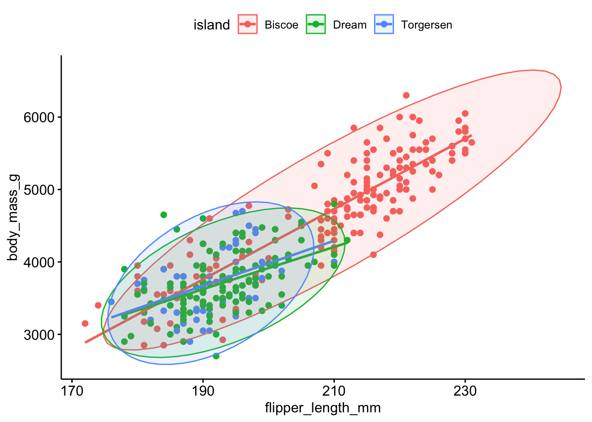

Sometimes the relationship between X and Y may change depending on the value of a third variable. This section provides some motivation for why we need a single model formation that can accommodate more than a single predictor.
This section uses functions from the ggdist and ggpubr packages to help tidy and visualize results from regression models. It also uses functions from the performance and glmnet packages to perform model selection and assessment.
This section uses the additional following packages and data:
Moderation occurs when the relationship between two variables depends on a third variable.
The third variable is referred to as the moderating variable or simply the moderator.
The moderator affects the direction and/or strength of the relationship between the explanatory (\(x\)) and response (\(y\)) variable.
This tends to be an important
When testing a potential moderator, we are asking the question whether there is an association between two constructs, but separately for different subgroups within the sample.
This is also called a stratified model, or a subgroup analysis.
8.1.1 Motivating Example - Admissions at UC Berkeley
Sometimes moderating variables can result in what’s known as Simpson’s Paradox. This has had legal consequences in the past at UC Berkeley.
Below are the admissions figures for Fall 1973 at UC Berkeley.
Table of admissions rates at UC Berkeley in 1973
Applicants
Admitted
Total
12,763
41%
Men
8,442
44%
Women
4,321
35%
Is there evidence of gender bias in college admissions? Do you think a difference of 35% vs 44% is too large to be by chance?
Department specific data
The table of admissions rates for the 6 largest departments show a different story.
All
Men
Women
Department
Applicants
Admitted
Applicants
Admitted
Applicants
Admitted
A
933
64%
825
62%
108
82%
B
585
63%
560
63%
25
68%
C
918
35%
325
37%
593
34%
D
792
34%
417
33%
375
35%
E
584
25%
191
28%
393
24%
F
714
6%
373
6%
341
7%
Total
4526
39%
2691
45%
1835
30%
After adjusting for features such as size and competitiveness of the department, the pooled data showed a “small but statistically significant bias in favor of women”.
8.1.2 Motivating Example: Association of flower parts
Let’s explore the relationship between the length of the sepal in an iris flower, and the length (cm) of its petal.
The points are clearly clustered by species, the slope of the lowess line between virginica and versicolor appear similar in strength, whereas the slope of the line for setosa is closer to zero. This would imply that petal length for Iris setosa may not be affected by the length of the sepal.
8.2 Stratification
Stratified models fit the regression equations (or any other bivariate analysis) for each subgroup of the population.
The mathematical model describing the relationship between Petal length (\(Y\)), and Sepal length (\(X\)) for each of the species separately would be written as follows:
where \(s, v, r\) indicates species setosa, versicolor and virginica respectively.
In each model, the intercept, slope, and variance of the residuals can all be different. This is the unique and powerful feature of stratified models. The downside is that each model is only fit on the amount of data in that particular subset. Furthermore, each model has 3 parameters that need to be estimated: \(\beta_{0}, \beta_{1}\), and \(\sigma^{2}\), for a total of 9 for the three models. The more parameters that need to be estimated, the more data we need.
8.3 Identifying a moderator
Here are 3 scenarios demonstrating how a third variable can modify the relationship between the original two variables.
Significant –> Non-Significant
Significant relationship at bivariate level
We expect the effect to exist in the entire population
Within at least one level of the third variable the strength of the relationship changes
P-value is no longer significant within at least one subgroup
Non-Significant –> Significant
Non-significant relationship at bivariate level
We do not expect the effect to exist in the entire population
Within at least one level of the third variable the relationship becomes significant
P-value is now significant within at least one subgroup
Change in Direction of Association
Significant relationship at bivariate level
We expect the effect to exist in the entire population
Within at least one level of the third variable the direction of the relationship changes
Means change order, positive to negative correlation etc.
8.4 What to look for in each type of analysis
ANOVA - look at the \(p\)-value, \(r\)-squared, means, and the graph of the ANOVA and compare to those values in the Moderation (i.e., each level of third variable) output to determine if third variable is moderator or not.
Chi-Square - look at the \(p\)-value, the percents for the columns in the crosstab table, and the graph for the Chi-Square and compare to those values in the Moderation (i.e., each level of third variable) output to determine if third variable is a moderator or not.
Correlation and Linear Regression - look at the correlation coefficient (\(r\)), \(p\)-value, regression coefficients, \(r\)-squared, and the scatterplot. Compare to those values in the Moderation (i.e., each level of third variable) output to determine if third variable is a moderator or not.
8.5 Ex: Correlation
Can we predict penguin body mass from the flipper length?
ggscatter(pen, x="flipper_length_mm", y ="body_mass_g", add ="reg.line", color ="island", ellipse =TRUE)

Probably, but the relationship between flipper length and body mass changes depending on what island they are found on.
There is a strong, positive, linear relationship (r=.87) between the flipper length and body mass of penguins when ignoring the species. This association is attenuated however within each species. Gentoo and Chinstrap still have strong correlations between flipper length and body mass, \(r\)=.70 and .64 respectively. However Adelie species penguins only have a moderate correlation with \(r=.45\).
So does Species moderate the relationship between flipper length and body mass? Visually we see a difference, but it is likely not statistically significant. More on how to determine that in ?sec-general-F.
8.6 Ex: Regression
Let’s explore the relationship between the length of the sepal in an iris flower, and the length (cm) of its petal.
The points are clearly clustered by species, the slope of the lowess line between virginica and versicolor appear similar in strength, whereas the slope of the line for setosa is closer to zero. This would imply that petal length for Setosa may not be affected by the length of the sepal.
How does the species change the regression equation?
The pattern of distributions of flipper length by species seems the same for both sexes of penguin. Sex is likely not a moderator. Let’s check the ANOVA anyhow.
A general pattern is seen where the proportion of smokers increases as the level of general health decreases. This pattern is similar within males and females, but it is noteworthy that a higher proportion of non smokers are female.
Investigate
Does being female change the relationship between smoking and general health? Is the distribution of smoking status (proportion of those who have ever smoked) equal across all levels of general health, for both males and females?
addhealth$female_c: Male
Pearson's Chi-squared test
data: x$eversmoke_c and x$genhealth
X-squared = 19.455, df = 4, p-value = 0.0006395
------------------------------------------------------------
addhealth$female_c: Female
Pearson's Chi-squared test
data: x$eversmoke_c and x$genhealth
X-squared = 19.998, df = 4, p-value = 0.0004998
Determine if the Third Variable is a moderator or not.
The relationship between smoking status and general health is significant in both the main effects and the stratified model. The distribution of smoking status across general health categories does not differ between females and males. Gender is not a moderator for this analysis.